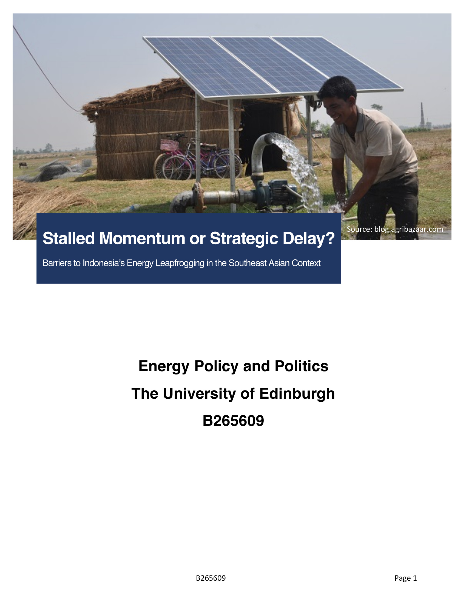
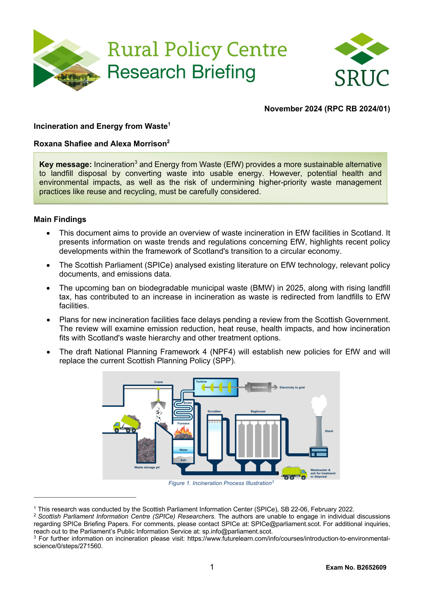
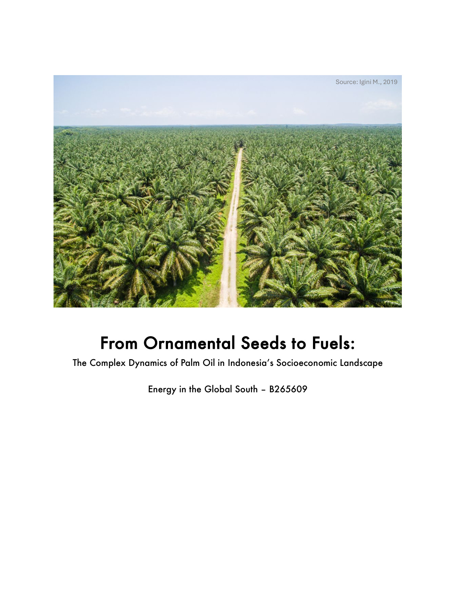

Articles & Reflections
Writings
Thoughts on energy, sustainability, systems thinking, and the occasional personal reflection.

A Distinction Earned, A Journey Shared
Finishing a Master's with distinction — and realising this milestone was never just about me, but about the people who made it possible.
Read article →
What an Ultra Marathon Has Taught Me
Completing a 50K ultra trail along Loch Ness at 23 — on mindset, preparation, and why moving slow is enough but stopping is not.
Read article →
Barriers to Indonesia's Energy Leapfrogging
Examining governance barriers, market incentives, and pathways for Indonesia to bypass fossil-fuel infrastructure in the Southeast Asian context.
Read article →
Wetland Water Extraction: An Environmental Modelling Report
Modelling wetland water abstraction scenarios for a fictional company — exploring short, medium, and long-term extraction potential with ecological impact analysis.
Read article →
Energy from Waste in Scotland: Balancing Capacity with Sustainability
A policy brief exploring the dilemma facing Scotland's waste management — balancing EfW capacity expansion with recycling targets and the waste hierarchy.
Read article →
The Invisible Cost of Indonesia's EV Ambition
A reflection on the hidden costs of Indonesia's EV transition — examining energy sources, resource extraction, and energy justice in decarbonisation.
Read article →
From Ornamental Seeds to Fuels
Exploring Indonesia's palm oil story — from colonial ornamental plants to a major biofuel driver, examining smallholder roles and sustainability challenges.
Read article →
2023 Startup Journey Turning Point
Completing the Smart Waste Center — a plastic recycling facility for Buangdisini, built from scratch in six months of planning and construction.
Read article →
The Unsung Heroes: Life of a Waste Collector
A look at the reality faced by waste collectors in developing countries — the hazards, the stigma, and the urgent need for change.
Read article →
Plastic Bottle Fun Facts
An illustrated breakdown of the three plastic types used in every plastic bottle — PET, HDPE, and PVC — and what makes each one different.
Read article →
Plastic Type Categorisation
A quick guide to Resin Identification Codes — what the numbers #1 to #7 on your plastic products actually mean and which types can be recycled.
Read article →